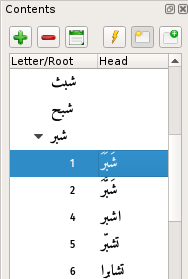
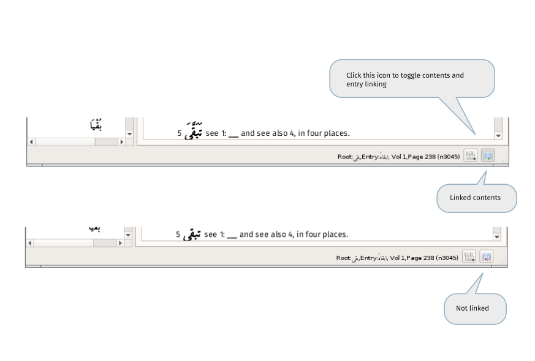

The contents are arranged in a heirarchy of letter, root and headword.

When initially loaded the tree contains the letters and all 5158 roots in the Lexicon. The headwords are loaded as they are needed because loading all 47919 entries would be prohibitively time consuming.
Entries in the tree that have children are indicated by a small triangle/arrow to the left of the entry. Clicking this will expand or collapse the tree at that point.
If an entry does not have such an arrow it can be expanded/collapsed using either the or the button at the top of the panel or hitting the spacebar. (An additional, configurable key has the same effect. This defaults to the 'x' key.)
To load an entry use either the button or double-click on it or press return when it is selected.
When using the button to view an entry, use the  and buttons as described below to control whether or not to use the current tab.
and buttons as described below to control whether or not to use the current tab.
If using the mouse or keyboard, the entry will be loaded into the current tab - create a new tab by holding either Shift or Control key. Whether the new tab is made active depends on button, as described below.
Expand the current item.
Collapse the current item.
Collapse the tree so that only the letters are visible.
Load the current item into the entry panel.
Load in new tab
When down, the entry is loaded into a new tab. In the image immediately above, the control is 'up'. In the image at the top of this page the control is 'down'. (It has a gray background)
Make the new tab current
When down, if the entry is being loaded into a new tab, that tab will become the current tab. The 'up' and 'down' appearance is the same as the previous control.
Syncing
The contents and the currently viewed entry can be made to be behave independently or set so that any movement in one is reflected in the other. This behaviour, linked vs not linked, can be set by clicking on the icon in the status bar:

This behaviour can also be turned on and off using the shortcut Ctrl+L.
If the contents are not linked, they can be brought into alignment using the two options:
- align contents to entry - causes the highlighted root to be set to match the currently viewed item
- align entry to contents - load the currently highlighted root into the current tab
These actions can be performed either via Menu -> View, the toolbar buttons and or the appropriate shortcuts.